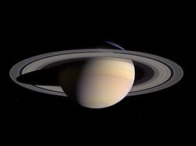
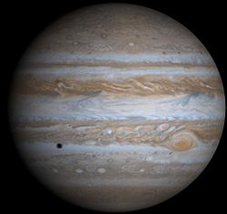
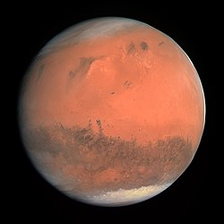
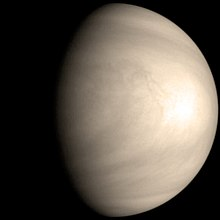

太陽系

太陽から6番目に遠い惑星
太陽系の中では木星に次いで2番目に大きな惑星
木星型惑星と呼ばれる巨大ガス惑星に属
土星の平均半径は地球の約9倍
密度は最も少ない

内側から5番目の公転軌道を周回している第5惑星
太陽系の中で大きさ、質量ともに最大の惑星
木星は古代から知られ観測され、多くの文明で神話や信仰の対象となった
英語Jupiter（ジュピター）は古代ローマ神話の神ユピテルが語源

太陽系の4番目の惑星
太陽系内では水星より大きく2番目に小さい
赤い惑星とは、火星の表面に存在する酸化鉄の影響で、赤みを帯びた外観が特徴
火星は大気の薄い地球型惑星で、月の衝突クレーターや地球の谷、砂漠、極地の氷冠などが確認できる

太陽系で2番目の惑星。地球にもっとも近い公転軌道を持つ
地球型惑星であり、太陽系内で大きさと平均密度がもっとも地球に似た惑星であるため、「地球の姉妹惑星」と表現される
太陽系の惑星の中で最も真円に近い公転軌道を持つ
明け方に見えるものを「明けの明星」、夕方に見えるものを「宵の明星」という
2010年5月には日本の金星探査機あかつきがうちあげられた